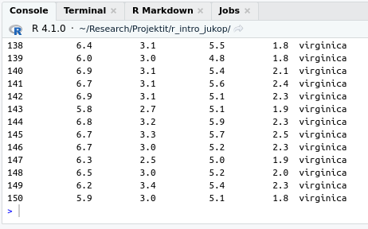
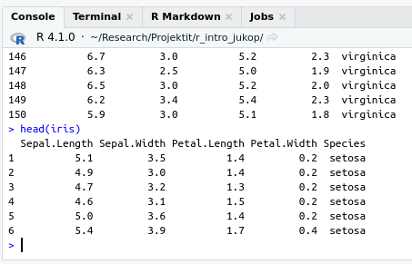
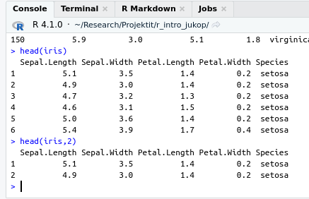

Datakehikko on R:n objekti, jossa voidaan säilyttää aineistoa. Aineiston muuttujat ovat datakehikon sarakkeita ja havaintoyksiköt rivejä. Datakehikossa jokaisella muuttujilla tulee aina olla nimi. Datakehikko on tyypillisin tietotyyppi erilaisten aineistojen käsittelyyn, jotka sisältävät useamman kuin yhden muuttujan.
Matriisi voi olla entuudestaan tuttu käsite myös tilastotieteen tai matematiikan kursseilta, ja R:n matriisi vastaakin matemaattista matriisia. Tästä syystä matriisi on hyvin yleinen tietorakenne, johon ei voi olla törmäämättä jos käyttää R:ää tutkimuksessa. Matriisilla tehdään yleensä kuitenkin matemaattisia operaatioita, eikä se ensisijaisesti ole aineiston säilytyspaikka.
Taulukko on juuri sitä miltä se kuulostaa: vektorintapainen tietorakenne, johon tallennetaan alkioita (elements), joilla on kaikilla sama luokka (class), eli esimerkiksi lukuja. Ero vektoriin on se, että taulukolla on useampi ulottuvuus. Matriisi on erikoistapaus taulukosta, sillä matriisi on kaksiulotteinen taulukko. Matriisi vastaa siis oikeastaan paremmin sitä mielikuvaa, joka monelle tulee mieleen suomen kielen sanasta taulukko, ja matriisit ovatkin paljon yleisempiä kuin moniulotteiset taulukot. Taulukoita käytetään yleensä frekvenssijakaumien tai suhteellisten osuuksien tarkasteluun ja testaamiseen.
Lista on järjestetty kokoelma alkioita, jotka voivat olla eri tyyppisiä objekteja.
Koska datakehikko on kaikista tärkein ja eniten käytetty tietotyyppi, niin aloitetaan siitä.
3.1 Datakehikko (data.frame)
Datakehikko (data frame) on erittäin yleinen tietorakenne tiedon tallentamiseen R:ssä. Datakehikko on kaksiulotteinen tietorakenne, eli sillä on rivejä ja sarakkeita. Datakehikon sarakkeet muodostuvat vektoreista. Sarakevektorit voivat olla eri luokan vektoreita, mutta datakehikko asettaa lisärajoitteen: vektoreiden on oltava yhtä pitkiä. Yhden rivin sarakkeilla olevien arvojen ajatellaan koskevan yhtä havaintoa. Sarakkeet voivat sisältää myös puuttuvaa tietoa (eli NA arvoja).
Luodaan datakehikko, jossa on kaksi muuttujaa, height ja weight, ja sijoitetaan niihin kahdeksan mittauksen tiedot. Huomionarvoista on se, että komennon data.frame sulkujen sisällä on käytettävä yhtäsuuruusmerkkiä (=) eikä sijoitusoperaattoria (<-). Tämä johtuu siitä, että teknisesti ottaen data.frame on funktio (funktioista lisää myöhemmin).
ID height gender
1 1 189.8 male
2 2 184.0 female
3 3 173.8 male
4 4 175.9 male
5 5 169.0 female
6 6 183.7 male
7 7 181.8 male
8 8 16.9 female
Huomaa, että jos sarakkeita ei itse nimeä, niin data.frame nimeää ne automaattisesti, mutta näin luodut nimet eivät välttämättä ole ollenkaan kuvaavia.
X1.8 c.189.8..184..173.8..175.9..169..183.7..181.8..16.9.
1 1 189.8
2 2 184.0
3 3 173.8
4 4 175.9
5 5 169.0
6 6 183.7
7 7 181.8
8 8 16.9
c..male....female....male....male....female....male....male...
1 male
2 female
3 male
4 male
5 female
6 male
7 male
8 female
Datakehikkojen käsittelystä kerrotaan tarkemmin luvussa Datan muokkaaminen.
3.2 Matriisi
3.2.1 Matriisin luominen
Matriisin luominen on yksinkertaista ja se tapahtuu funktiolla matrix.
matrix(1:9, nrow =3, ncol =3)
[,1] [,2] [,3]
[1,] 1 4 7
[2,] 2 5 8
[3,] 3 6 9
Funktiolle annetaan siis matriisiin tallennettavat luvut vektorina, sekä matriisin rivien ja sarakkeiden määrä (argumentit ncol ja nrow). Arvot sijoitetaan matriisiin sarakkeittain. Matriisi voi koostua myös kokonaan tietystä arvosta:
Jos matriisin tallennettavat luvut annetaan vektorina, niin tällöin riittää antaa vain joko rivien tai sarakkein lukumäärä, ja R osaa päätellä puuttuvan dimension annetun vektorin perusteella.
matrix(1:9, nrow =3)
[,1] [,2] [,3]
[1,] 1 4 7
[2,] 2 5 8
[3,] 3 6 9
Useimmiten matriisien data luetaan R:ään jostain tiedostosta, joka on tuotettu Excelillä tai jollain muulla ohjelmalla (tutkimustulosten kirjaus suoraan R:ään on raskasta). Matriisien luonti käsin on kuitenkin hyvä osata, sillä pienillä matriiseilla on kätevää testata omaa koodia ja tehdä matriisilaskutoimituksia. Myös yllä olevan kaltaisia, esim. nollalla täytettyjä matriiseja on joskus kätevää käyttää “alustana”, kun lasketaan omasta datasta tuloksia rivi tai sarake kerrallaan. Tämä johtuu siitä, että olemassa olevan matriisin rivin arvojen muuttaminen on nopeampi operaatio kuin rivin lisääminen matriisiin.
3.2.2 Matriisin koko
Joskus voi törmätä matriiseihin, joiden kokoa ei tiedetä, tai ei haluta olettaa. Tällöin tarvitaan funktioita, jotka kertovat matriisin koosta. Esimerkiksi, kun luetaan dataa R:ään tiedostoista, on hyvä tarkistaa, että kaikki rivit ja sarakkeet ovat mukana. Funktiot nrow ja ncol palauttavat rivien ja sarakkeiden määrän, dim palauttaa matriisin rivien ja sarakkeiden määrän vektorina, jossa rivien määrä on ensimmäinen alkio.
X <-matrix(1:12, ncol =4)# Number of rowsnrow(X)
[1] 3
# Number of columnsncol(X)
[1] 4
# Dimensionsdim(X)
[1] 3 4
Nämä funktiot toimivat myös datakehikoille.
3.2.3 Matriisin indeksointi
Matriisin indeksointi on hyvin samantapainen operaatio kuin vektorin indeksointi, eli matriisin perään laitetaan hakasulkeet ja niihin määritellään halutut indeksit. Matriisin indeksoinnissa pitää kuitenkin antaa erikseen indeksit riveille ja sarakkeille, pilkulla erotettuna. Jos hakasulkeisiin antaa vain yhden luvun ilman pilkkua, niin R käsittelee matriisia vektorina, jolloin indeksointi tapahtuu kuten vektoreiden tapauksessa. Datakehikoita voidaan indeksoida useimmissa tapauksissa kuten matriiseja.
# Only nrow is enough, since the number of columns must be 3X <-matrix(1:9, nrow =3)X
[,1] [,2] [,3]
[1,] 1 4 7
[2,] 2 5 8
[3,] 3 6 9
# Element on second row, third columnX[2, 3]
[1] 8
# The complete first rowX[1, ]
[1] 1 4 7
# The second and third values of the second columnX[2:3, 3]
[1] 8 9
# Get rows where the values of the first column are > 1X[X[, 1] >1, ]
[,1] [,2] [,3]
[1,] 2 5 8
[2,] 3 6 9
HUOM: jos matriisia indeksoidessa tuloksessa sarakkeiden tai rivien määrä on tasan yksi, kuten yllä olevissa esimerkeissä viimeistä lukuun ottamatta, tuloksena on vektori, ei matriisi. Jos haluaa tuloksen olevan matriisi, tulee hakasulkeisiin lisätä argumentti drop = FALSE
# The complete first rowX[1, , drop =FALSE]
[,1] [,2] [,3]
[1,] 1 4 7
# The second and third values of the second columnX[2:3, 3, drop =FALSE]
[,1]
[1,] 8
[2,] 9
Matriiseja voi myös muokata sijoittamalla haluttuihin paikkoihin uusia arvoja:
# Copy of XX_new <- X# Replace first row with new valuesX_new[1, ] <-c(10, 13, 15)X_new
Matriisista voi myös poimia tietyt rivit tai sarakkeet jättämällä tiettyjä rivejä tai sarakkeita pois. Tämä tapahtuu antamalla indeksi miinusmerkkisenä:
# Without first rowX[-1, ]
[,1] [,2] [,3]
[1,] 2 5 8
[2,] 3 6 9
# Without second columnX[, -2]
[,1] [,2]
[1,] 1 7
[2,] 2 8
[3,] 3 9
Huomaa kuitenkin, että positiivisia ja negatiivisia indeksejä ei voi käyttää samanaikaisesti tietyssä dimensiossa:
# Trying to mix positive and negative indicesX[c(-1, 1), ]
Error in X[c(-1, 1), ]: only 0's may be mixed with negative subscripts
3.2.4 Indeksimatriisi (index matrix)
Jos halutaan poimia useampi yksittäinen arvo matriisista, tulee käyttää indeksimatriisia (index matrix).
Esimerkiksi, jos haluttaisiin poimia äskeisestä matriisista x arvot indekseissä [1, 2], [1, 3] ja [2, 2], niin seuraava koodi ei toimi:
X[c(1, 1, 2), c(2, 3, 2)]
[,1] [,2] [,3]
[1,] 4 7 4
[2,] 4 7 4
[3,] 5 8 5
vaan tulee käyttää indeksimatriisia, jonka jokainen rivi antaa yhden halutun alkion rivi- ja sarakeindeksin tässä järjestyksessä. Indeksimatriiseja tehdessä kannattaa asettaa argumentti byrow = TRUE, jolloin alkiot laitetaan matriisiin rivi kerrallaan, ei sarake kerrallaan kuten oletusarvoisesti tehtäisiin.
Matriisi koostuu usein useammasta muuttujasta ja havainnoista. Yleensä jokainen rivi vastaa yhtä havaintoa, ja sarake muuttujaa. Tämän takia on hyvä tietää, miten yksittäisistä vektoreista saa koottua matriiseja. Alla olevassa esimerkissä on koottu yhteen matriisiin Star Wars -hahmojen pituuksia ja painoja. Tämä tapahtuu cbind funktiolla (column bind), joka nimensä mukaisesti yhdistää vektorit matriisin sarakkeiksi. cbind voi yhdistää myös valmiita matriiseja yhteen, niin että matriisit ovat “vierekkäin” eli yhdistetyssä matriisissa on kummankin matriisin sarakkeet (rivien määrän tulee olla sama). Vastaavasti rbind (row bind) yhdistää matriiseja “allekkain” (sarakkeiden määrän tulee olla sama).
Matriisien rivit ja sarakkeet voi nimetä, ja usein tässä onkin järkeä. Yllä olevassa esimerkissä starwars-matriisin sarakkeet on nimetty alkuperäisten vektorien mukaan. Alla olevassa esimerkissä on lisää tapoja nimetä rivejä ja sarakkeita
# Set column names by naming arguments while building matrix from vectorscbind(Height = heights, Mass = masses)
# Set column and row names explicitlycolnames(starwars) <-c("Height", "Mass")rownames(starwars) <-c("Luke Skywalker", "C-3PO", "R2-D2", "Darth Vader", "Leia Organa", "Owen Lars")starwars
Height Mass
Luke Skywalker 172 77
C-3PO 167 75
R2-D2 96 32
Darth Vader 202 136
Leia Organa 150 49
Owen Lars 178 120
Nimettyjä matriiseja voi indeksoida myös nimien perusteella:
starwars[c("Luke Skywalker", "R2-D2"), ]
Height Mass
Luke Skywalker 172 77
R2-D2 96 32
Matriisiin voi myös lisätä uusia sarakkeita cbind funktiolla. Alla lisätään matriisiin starwars uusi sarake, jossa on hahmojen BMI:
# Create a vector for BMI and add to matrix with cbindbmi <- starwars[, "Mass"] / (starwars[, "Height"] /100)^2cbind(starwars, "BMI"= bmi)
Height Mass BMI
Luke Skywalker 172 77 26.02758
C-3PO 167 75 26.89232
R2-D2 96 32 34.72222
Darth Vader 202 136 33.33007
Leia Organa 150 49 21.77778
Owen Lars 178 120 37.87401
3.2.7 Matriiseilla laskeminen
Matriiseilla laskeminen on hyvin samankaltaista kuin vektoreilla laskeminen. Matriisin ja yksittäisen luvun välisessä operaatiossa matriisin alkiot käsitellään yksitellen. Samoin samankokoiset matriisit voi esim. lisätä yhteen, jolloin lisäys tapahtuu alkio kerrallaan.
Matriiseille on lisäksi määritelty paljon matriisien omia laskutoimituksia, joita ei käsitellä tarkemmin tässä materiaalissa. Matriisilaskentaa opiskelleille huomio: R:ssä oletuksena kertolasku tehdään alkioittain, matriisitulo tapahtuu operaattorilla %*% ja matriisin transpoosin voi määrittää funktiolla t.
3.3 Ristitaulukko
Ristitaulukko (kontingenssitaulukko, contingency table) on matriisia muistuttava kaksi- tai useampiulotteinen tietorakenne frekvenssiaineistojen käsittelyyn. Tässä materiaalissa käsittelemme vain kaksiulotteisia ristitaulukoita yksinkertaisuuden vuoksi. Ristitaulukko kuvaa kahden luokittelu- tai järjestysasteikollisen muuttujan havaintojakaumaa: jokaisessa taulukon solussa on tietyn muuttujien tasojen yhdistelmän havaintojen lukumäärä aineistossa. Huomaa, että ristitaulukko ei ole taulukko (array)!
Tarkastellaan esimerkkinä lämpötilan ja kuukauden ristitaulokkoa R:n sisäisessä ilmanlaatuaineistossa airquality. Taulukko luodaan funktiolla table, joka ottaa argumentteinaan kaksi muuttujaa, joista ristitaulukko muodostetaan. Tässä esimerkissä lisäksi funktio cut muodostaa lämpötilamuuttujasta Temp luokitteluasteikollisen muuttujan sen kvartiilien perusteella.
Tässä tapauksessa ristitaulukon rivimuuttuja on lämpötila ja sarakemuuttuja on kuukausi. Frekvenssien sijaan voimme myös tarkastella suhteellisia osuuksia prop.table funktiolla.
Usein kiinnostavampaa on kuitenkin tarkastella ehdollisia suhteellisia osuuksia, eli osuuksia joko rivi- tai sarakemuuttujan eri tasojen sisällä. Tämän mahdollistaa prop.table-funktion argumentti margin, joka määrittää, tehdäänkö tarkastelu rivimuuttujan (margin = 1) vai sarakemuuttujan (margin = 2) suhteen.
Ristitaulukkoa voidaan myös käyttää rivi- ja sarakemuuttujan riippuvuuden testaamiseen Khiin neliö -testillä, johon palataan myöhemmin luvussa 8.3.
3.4 Tietotyyppien tarkastelu
Kaikkia objekteja voi tulostaa Console-ikkunassa kutsumalla objektin nimen. Joskus tarvitaan kuitenkin apufunktioita.
3.4.1 View()
Mikäli käytät RStudiota, niin tarkempaa tarkastelua varten kannattaa kuitenkin käyttää View-funktiota. View avaa ikkunan, jossa voi selata data framen tai matriisin rivejä ja sarakkeita, sekä järjestää arvoja halutun sarakkeen mukaan (tämä järjestys säilyy vain View-näkymässä, itse muuttujan rakenne ei muutu). Mikäli aineistossasi on satoja tuhansia tai miljoonia rivejä, niin View saattaa olla liian hidas.
3.4.2 str()
Perineinen tapa tarkastella objekteja R:ssä on funktio str, joka toimii kaikissa R-ympäristöissä. Funktio str tulostaa tiivistetyssä muodossa kaiken, mitä sille annettu objekti sisältää. Esimerkiksi datakehikon tapauksessa sen avulla saadaan sekä muuttujien nimet, niitä vastaavien vektoreiden tyypit että ruudulle mahtuvan osan vektoreiden alkioista.
# Examine the structure of data framestr(study_data)
'data.frame': 8 obs. of 3 variables:
$ ID : int 1 2 3 4 5 6 7 8
$ height: num 190 184 174 176 169 ...
$ gender: chr "male" "female" "male" "male" ...
3.4.3 head()
Jos aineistossa on todella paljon rivejä, on sen tulostaminen Console-ikkunaan ikävää. Ladataan esimerkiksi iris-data, jossa on 150 havaintoa. Tulostettaessa rivejä on niin monta, että muuttujien nimet eivät näy, mikä on epämiellyttävää. Parempi tapa saada käsitys aineistosta on kutsua sitä head-funktion avulla.
# Load data for this exampledata(iris)# Try to print iris-data directlyiris

# Print 6 first rows of iris datahead(iris)

# You can also define the number of rows to printhead(iris, 2)

3.5 Extra: Taulukko ja lista
Taulukoita (array) ja listoja (list) ei tavallista data-analyysiä toteutettaessa yleensä tarvita. Lue kuitenkin seuraava, jotta saat yleiskäsityksen mihin niitä tarvitaan. Voit myös palata perehtymään taulukoihin ja listoihin myöhemmin koska tahansa.
3.5.1 Taulukko
Kuten alussa todettiin, taulukot (array) ovat hyvin harvinaisia, joten niihin ei kannata tällä kurssilla keskittyä. Niitä kuitenkin tarvitaan joidenkin tehtävien tekemiseen, joten tässä on hyvin lyhyt oppimäärä taulukoista.
Taulukot ovat matriisien kaltaisia, mutta taulukossa voi olla yli kaksi ulottuvuutta. Oikeastaan matriisit ovat kaksiulotteisia taulukoita. Alla on esimerkki 3-ulotteisesta taulukosta, jota voi ajatella “peräkkäin” olevina matriiseina. Alla on kuva 1-ulotteisesta taulukosta eli vektorista, 2-ulotteisesta taulukosta eli matriisista ja 3-ulotteisesta taulukosta.
Taulukkoja luodaan matriisien tapaan funktiolla array. Toisin kuin matriisien tapauksessa, array-funktiolle pitää luetella sen kaikki ulottuvuudet vektorina. Alla oleva esimerkki luo 3-ulotteisen taulukon, jonka voi ajatella koostuvan kolmesta \(4 \times 2\) matriisista.
Listat ovat tärkeitä erityisesti silloin, kun aletaan toteuttamaan uusia toimintoja R-kieleen omien funktioiden avulla. Niin kauan kun valmiit R-funktiot riittävät, ei listoilla ole juuri käyttöä.
Lista (list) on vektorinkaltainen tietorakenne, jossa on järjestyksessä alkioita, jotka on mahdollisesti nimetty. Tärkeä ero vektoriin verrattuna on, että listan alkiot voivat olla erityyppisiä. Listoja luodaan list-funktiolla:
example_list <-list(c(1, 2, 3),matrix(0, nrow =3, ncol =4),"list can include anything")example_list
subject_ids <-c("ANKL", "PEPA", "DIPR")measurements <-matrix(c(1, 2.5, 3,3.5, 5, 3,2.3, 3, 1.6 ),nrow =3)colnames(measurements) <-c("CRP", "HDL", "LDL")rownames(measurements) <- subject_ids# List names can be given with or without quotesstudy <-list(Subject_ID = subject_ids,"Measurements"= measurements,Study_name ="Blood tests")study
Listoja ja niiden kaltaisia olioita käytetään R:ssä paljon. Listoihin on kätevä tallentaa erityyppistä tietoa, joka kuitenkin halutaan säilyttää yhtenä kokonaisuutena. Esimerkiksi yksinkertaisetkin tilastolliset mallit tuottavat paljon erilaista tietoa, joka tallennetaan listaan (tarkemmin listan kaltaiseen olioon, tästä lisää myöhemmin).
3.5.2.1 Listojen alkioiden käsittely
Listan alkioihin pääsee käsiksi kahdella eri tavalla: kaksoishakasulkeilla [[]] tai, jos lista on nimetty, dollarimerkillä $:
Listaa voi indeksoida myös yksinkertaisilla hakasulkeilla. Tällöin palautetaan aina lista, eikä yksittäistä alkiota kuten aiemmin. Palautetaan ensiksi mieleen funktio class, joka palauttaa argumenttinsa luokan (class). Vektorin luokka vaihtelee vektorin sisällön mukaan: numeric = lukuja, character = merkkijonoja, logical = loogisia arvoja, jne. Listojen luokka on luonnollisesti list. R:ssä kaikki muuttujiin tallennettavat tiedot ovat olioita (object). R-olioilla on aina luokka, joka määrittää sen ominaisuudet. Esimerkiksi print ja plot-komennot toimivat eri tavalla riippuen niiden argumentin luokasta.
Tarkastellaan alla, mikä ero yksinkertaisilla ja kaksinkertaisilla hakasulkeilla on listan indeksoinnissa:
# Returns a list of length one with the matrix as the only elementstudy[2]
3.5.2.2 Alkion lisäys listaan ja listojen yhdistäminen
Yksittäisen alkion voi lisätä listaan sijoittamalla listan johonkin indeksiin tai nimeen uusi arvo (indeksin pitää olla yhtä suurempi kuin listan pituus). HUOM! Listan alkio voi myös itse olla lista (sisäkkäinen lista = nested list).
# Add a character matrix as the fourth element of studystudy[[4]] <-matrix(c("CPR", "HDL", "LDL","C-reactive protein", "High-density lipoprotein", "Low-density lipoprotein" ),ncol =2)# An element of a list can also be a liststudy[["professional"]] <-list(name =c("John H. Watson"),position ="Medical doctor",age =45)study
list1 <-list(vector = vector1, name ="list1")list2 <- study[1:2]# Concatenate three lists, names stay the samec(list1, list2, list(first_element ="A", second ="B"))